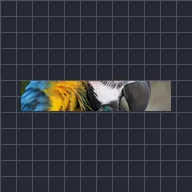

カール

レイヤーの片端を円形に巻き、もう片端は平らなままにします。オフセットをアニメーションして巻いたりほどいたりできます。横長で薄いレイヤーに最適です。
設定
| 設定項目 | 種類 | 範囲 | デフォルト |
|---|---|---|---|
| オフセット | 数値 | -0.5〜1.5 | 0.5 |
| 半径 | 数値 | 0〜50 | 1 |
| カール開始 | 選択 | 左、右 | 右 |
| 方向 | 選択 | 上、下 | 上 |
| ストレッチ | 数値 | 0.01〜50 | 1 |

レイヤーの片端を円形に巻き、もう片端は平らなままにします。オフセットをアニメーションして巻いたりほどいたりできます。横長で薄いレイヤーに最適です。
| 設定項目 | 種類 | 範囲 | デフォルト |
|---|---|---|---|
| オフセット | 数値 | -0.5〜1.5 | 0.5 |
| 半径 | 数値 | 0〜50 | 1 |
| カール開始 | 選択 | 左、右 | 右 |
| 方向 | 選択 | 上、下 | 上 |
| ストレッチ | 数値 | 0.01〜50 | 1 |